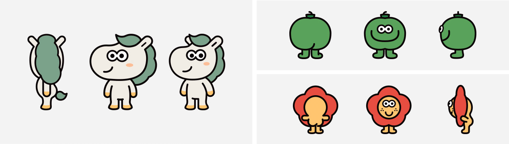

이니스프리와 함께 유랑하는
이니랑,카멜리,푸루티를 소개합니다.
나만의 아름다움을, 찾기 위해 유랑하는 '이니랑'
Background Story
사계절 내내 푸르른, 아름다운 땅 제주!
제주 북쪽 푸른 바다 근처에는 조랑말들이 모여 사는 ‘말랑 마을’이 있습니다.
이곳의 말들에겐 암묵적으로 지켜야 할 규칙이 있었으니,
‘절대 오름 너머 마을 밖을 나가지 말라!’ 이렇게 외부와 단절된 말랑 마을에 개성과
아름다움을 꿈꾸는 ‘이니랑’이 살고 있었습니다.
그런 이니랑에게 똑같은 스타일과 사고가 가득한 말랑 마을은 따분함 그
자체였습니다.
답답한 말랑 마을에서 더 이상 새로움을 찾을 수 없다고 생각한 이니랑은 더 넓은 세상에
나가 다양한 삶을 경험하기로 마음 먹습니다. 결국 호기심을 참지 못하고 마을 밖으로
나온 이니랑은 자신이 알고 있던 제주보다 더 넓고 광활한 자연의 푸름과 산뜻한 내음에
편안함을 느낍니다. 이니랑은 곧 좋은 일이 생길 것 같은 기대감에 부풉니다. 그러던 중
우연히 친환경 원료를 찾는 '푸루티'와
제주 지킴이 '카멜리'를 만납니다. 이니랑은
그들과 함께 자신을 위한 ‘마이 뷰티 레시피’를 찾아 유랑을 시작합니다.
Character
이니스프리와 함께, 이니랑
당차고 새로움을 즐기는 캐릭터로 이니스프리의
“밀레니얼 고객”을 상징합니다. 말랑마을을 벗어나 멋진 세계를
접하고 자신을 위한 뷰티레시피를 찾아 유랑을 시작합니다.
매일 먹던 당근보다 귤이 좋은 조랑말로, 제주귤 때문에
사계절 손발이 노랗게 물들어 있어요.
녹차의 제주 방언 "푸른차",푸루티
평생 녹차밭에서 그린티만을 연구한
완벽주의 성향의 연구가로 “이니스프리”를 상징합니다.
이니랑와 함께 다양한 제주 원료를 찾는 유랑을 하며,
좋은 원료를 찾았을 때 누구보다
행복함과 보람을 느끼는 캐릭터 입니다.
러블리한 제주 토박이 동백, 카멜리
동백나무에 살며 제주의 자연을 배운 카멜리는
“제주 헤리티지”를 상징합니다.
이들의 유랑에 네비게이션 역할을 하며 길을 찾을 땐
꽃잎을 핸들처럼 돌려서 방향을 찾아요.
Turnaround
